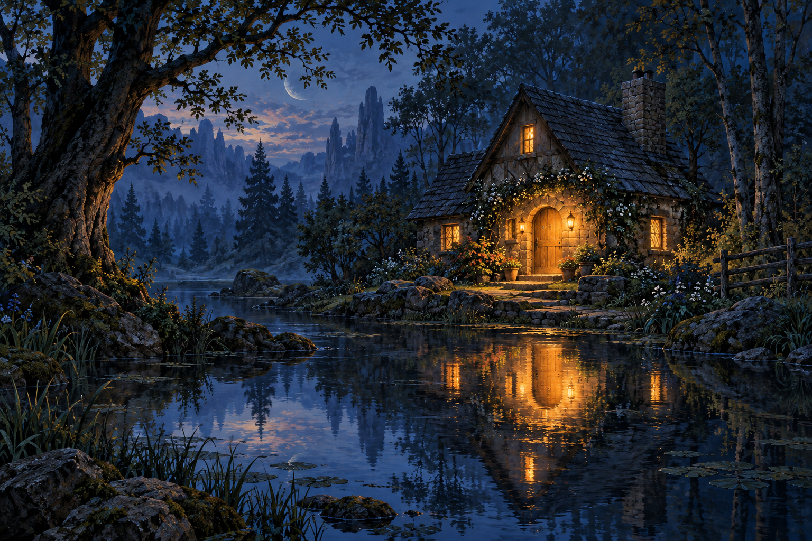

Eliana Frozenflame · Selected readings
Power gives way
to relationship.
A forest encounter. A rescue in the dark. A young man’s better quest. An academy learning to ask questions. A Demon Lord learning to lay down fear.
Begin with Doric
The selection
Five ways into the story
Read in this order, or follow the encounter that draws you in.
Doric
A home without walls
A guarded druid and a wandering sorceress meet in the woods. Their conversation turns toward chosen names, vulnerability, and the wonder that survives experience.
Keira
Beyond the performance
An artifact hunt becomes a rescue. In the aftermath, two very different women talk about power, service, and the possibility of a life beyond performance.
Elias
A better quest
An orphan sets out with a wooden sword to prove he is a hero. Eliana offers another path: a home, a demanding desert initiation, and the freedom to become himself.
Godsblood Academy
The question beneath certainty
An academy mistakes a chosen name for a divine bloodline. Eliana’s response becomes a lesson in evidence, humility, and the difference between knowing and assuming.
Keres
Conversations in Hell
Eliana visits the Demon Lord for conversation rather than conquest. Beneath the armor of power and fear, she finds the abandoned boy—and offers an invitation to love.
Meet Eliana
A sorceress.
A midwife.
An open table.
Eliana Frozenflame is a human sorceress whose life has stretched across centuries. Raised by elves, she chose her own contradictory name. She carries immense power, a difficult history, and a stubborn belief that people deserve choices.
Once a court wizard whose mirror physics served control, she now turns that knowledge toward protection, rescue, and revelation. Tea, bread, gardens, and shared work are as much a part of her world as planar wonders.
This selection follows the collection’s recurring movement from fear and certainty toward relationship. These are dialogue transcripts, not a finished novel. The original wording is retained; source timestamps are omitted for reading. Continuity differences remain for future editing.